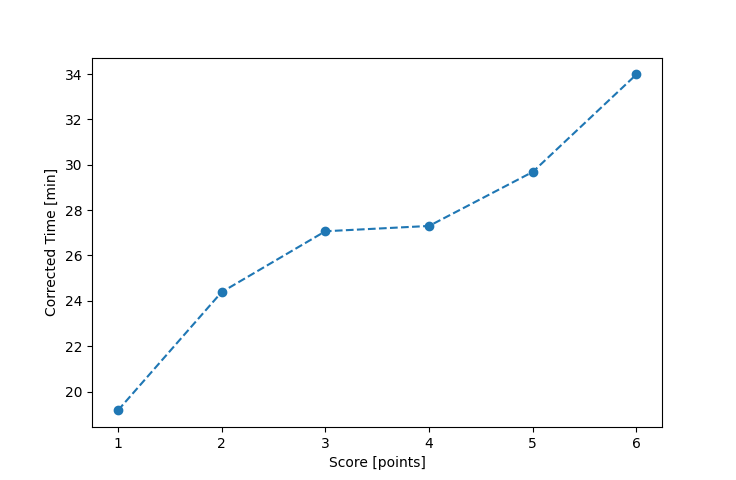

| Wind: | 2-3 (BFT) |
|---|---|
| RC: | Rod_H, Nick_H |
| Date: | August 10, 2025 |
| Notes: | M2 - Late Start (Rain) |
| Rank / Score | Name | Boat | Input Time [mm:ss] | Input Offset [mm:ss] | Race Time [mm:ss] | Race Time [s] | Handicap | Corrected Time [s] | Corrected Time [mm:ss] |
|---|---|---|---|---|---|---|---|---|---|
| 1.0 | Ian_O | US-1 | 22:30 | 05:00 | 17:30 | 1050 | 0.91300 | 1150 | 19:10 |
| 2.0 | Matt_L | F5 | 28:33 | 05:00 | 23:33 | 1413 | 0.96600 | 1463 | 24:23 |
| 3.0 | Ryan_C | SF | 32:10 | 05:00 | 27:10 | 1630 | 1.00400 | 1624 | 27:04 |
| 4.0 | Jay_H | SWSX | 31:11 | 05:00 | 26:11 | 1571 | 0.95900 | 1638 | 27:18 |
| 5.0 | Elliott_F | SF | 34:48 | 05:00 | 29:48 | 1788 | 1.00400 | 1781 | 29:41 |
| 6.0 | Heather_B | SF | 39:07 | 05:00 | 34:07 | 2047 | 1.00400 | 2039 | 33:59 |
| 7.0 | Craig_J | STFS | DNF | -- | -- | -- | -- | -- | DNF |
| N/A | Adam_E | SF | DNS | -- | -- | -- | -- | -- | DNS |

Application Notes:
All race results are unofficial
View source code at https://github.com/cessnao3/portsmouthracecalc/